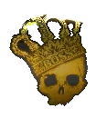
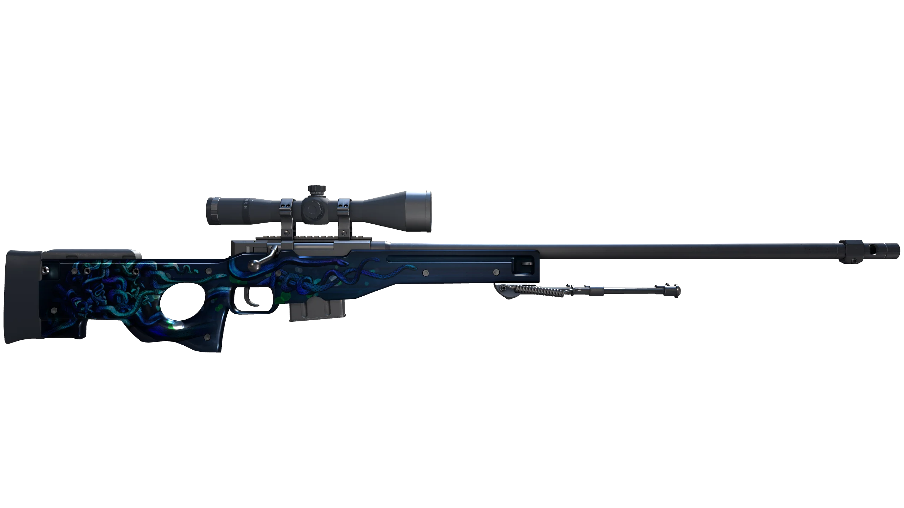
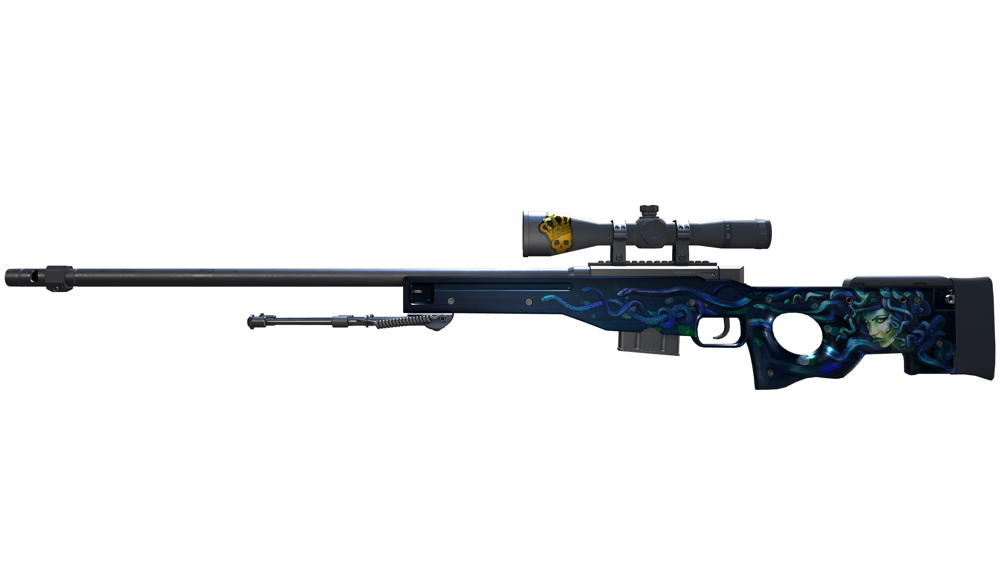

★ 12,699 Stars
Apache 2.0
v1.4.4
img2threejs
将参考图以代码方式重建为可动画的 Three.js 程序化模型。Token 高效，零 pip 依赖，8-pass 质量门控，从单张图片生成可直接操控的 3D 程序化资产。
🎯 核心价值锚点
参考图片 → 程序化 Three.js TypeScript 代码 → 可动画 3D 资产。不同于 photogrammetry、mesh 提取或下载素材包，是真正的代码化 3D 重建。
支持的重建对象
🔫
CS2 武器
Glock-18 / M9 Bayonet / AWP 等，含涂装投影、组件合约、结构审查门
📦
硬表面物体
电子产品、工具、箱包等，带倒角/螺丝/接缝等细节枚举
🧑
人形角色
解剖学 track、头部单元比例、面部特征点、rigging 准备
🏠
场景 / 迪拉斯
等距场景、建筑物内部、室外环境（v1.6+）
8-Pass 重建管道
每 pass 独立质量门控（quality gate）：必须通过视觉审核才能解锁下一 pass，自动化自纠正直到达到阈值。不合格直接 fail-closed，不生成代码。
Token 效率对比
❌ 普通方法（token 浪费场景）
每次重读整个模型× N 次
像素级评分脚本token 密集
手动 JSON 验证token 浪费
多次重复已有步骤token 浪费
多张散点截图对比token 浪费
✅ img2threejs 策略
每次只生成当前 pass小而专注
Python 脚本做验证零 token
Fail-fast 提前拦截spec 阶段终止
每次一张对比图精确判断
纯 stdlib 无依赖零安装开销
重建效果示意 — AWP Medusa

原始参考图（游戏内截图）

Three.js 程序化重建 — 正面

Three.js 程序化重建 — 背面
图：CS2 AWP Medusa 皮肤 — 参考图 vs 程序化 Three.js 重建效果（来源：img2threejs-showcase）
核心能力
🔍
Detail-first 分析
先枚举 identity-defining 细节：倒角/圆角/面板缝/紧固件/刻线/光泽度/磨损。无法映射到真实组件的细节直接丢弃，不虚假生成。
🎯
严格质量门控
strict-quality gate 在 spec 阶段拦截浅层规范，fail-closed 策略：不达标不生成代码，避免 token 浪费。
🎭
角色识别分类
object / character / hybrid 三分类。人形走解剖学 track（头部单元比例 + 面部特征点 + 姿势）。
🖌
PBR 材质提取
参考图裁剪 → registry 解析 → ObjectSculptSpec，每区域独立 confidence 报告，CIEDE2000 色差数学。
⚔️
CS2 武器专项
Family-specific 组件合约，projection-first 涂装，painted-region 覆盖报告，map-stripped 块体验证。
👤
LikeMaximization
人脸参数模板 + landmark 拟合 + 去光照 + 相机匹配 + 参考投影，按区域报告 confidence。
快速使用
安装（Claude Code / Codex / OpenCode）
git clone https://github.com/img2threejs/img2threejs.git ~/.claude/skills/img2threejs
ln -s ~/.claude/skills/img2threejs ~/.codex/skills/img2threejs
调用命令
/img2threejs Rebuild this object as a Three.js model, keep the proportions, angles, and colours.
/img2threejs Rebuild the subject in this image as a procedural Three.js model.
多会话重建（state 管理）
python3 forge/state.py init --reference <image> --profile character --spec object-sculpt-spec.json
python3 forge/next.py --state .img2threejs/state.json
脚本独立运行
python3 forge/stage1_intake/probe_image.py <image>
python3 forge/stage2_spec/new_pre_spec_assessment.py "Name" --image <image> --out assessment.json
python3 forge/stage2_spec/new_sculpt_spec.py "Name" --image <image> --assessment assessment.json --out spec.json
python3 forge/stage2_spec/validate_sculpt_spec.py spec.json --strict-quality
python3 forge/stage3_build/generate_threejs_factory.py spec.json --out src/createObjectModel.ts
核心脚本参考
| Stage | Script | Role |
|---|
| Intake | probe_image.py | 图像元数据与明显技术问题（不做视觉检查） |
| Intake | build_detail_inventory.py | 切分参考图区域，枚举 identity-defining 细节清单 |
| Intake | extract_landmarks.py | 叠加 landmark 网格，人形解剖骨架（角色用） |
| Intake | solve_camera_pose.py | 估算参考图相机参数，供渲染侧相机匹配 |
| Intake | delight_albedo.py | 从照片近似中性漫反射（纹理投影前处理） |
| Spec | new_pre_spec_assessment.py | 分类对象类型，评分复杂度，输出质量契约 |
| Spec | new_sculpt_spec.py | 基于 assessment 生成 ObjectSculptSpec JSON |
| Spec | validate_sculpt_spec.py | 验证 spec；--strict-quality 拦截浅规范 |
| Build | generate_threejs_factory.py | 为当前解锁 pass 生成 TypeScript THREE.Group 工厂，fail-closed |
| Review | make_comparison_sheet.py | 打包一张参考-vs-渲染对比图供审核 |
| Review | append_review.py | 记录每 pass 审核结果：评分、决策、证据 |
| Review | cs2_review.py | CS2 武器专项审查：exactness tier、family identity、组件覆盖率 |
输出产物
📄 ObjectSculptSpec.json
完整组件树（components）、PBR 材质（materials）、重复系统（repetition systems）、socket 定义、pivot、collider、 DestructionGroup，以及每 pass 审核历史记录。
📦 createObjectNameModel.ts
TypeScript 工厂函数 createObjectNameModel(spec, options): THREE.Group，root.userData.sculptRuntime 暴露 nodes / sockets / colliders / destructionGroups，可直接动画。
🎬 render + comparison sheets
每 pass 渲染结果 + 并排对比图，记录该 pass 的保真度。可随时回溯哪个 pass 需要返工。
🎮 运行时分层
pivot（旋转轴）、socket（装配口）、collider（碰撞体）、userData.tick（循环动画入口）——模型从一开始就为动画而生。
版本路线图
v1.4
The Weapon Update
CS2 图像匹配重建，family-specific adapters，结构审查门，涂装投影。
v1.5
The Character Update
人形重建，面部特征，rigging 准备拓扑，blendshape 准备，毛发和服装。
v1.6
The Environment Update
建筑、室内、街道、植被、地形感知、多对象重建。
v1.8
The Animation Update
auto rigging，auto skin weights，Mixamo 兼容，面部 rig。